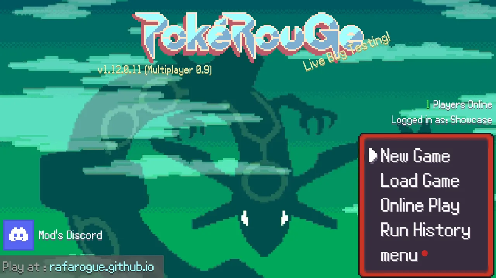
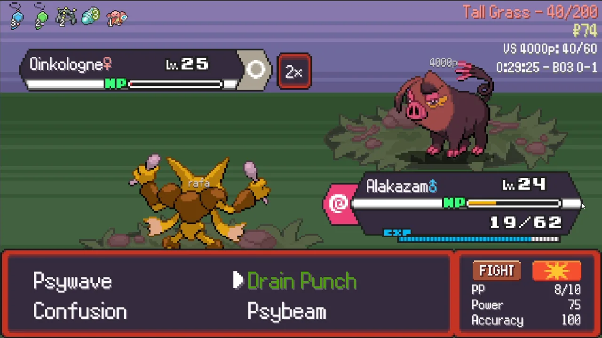
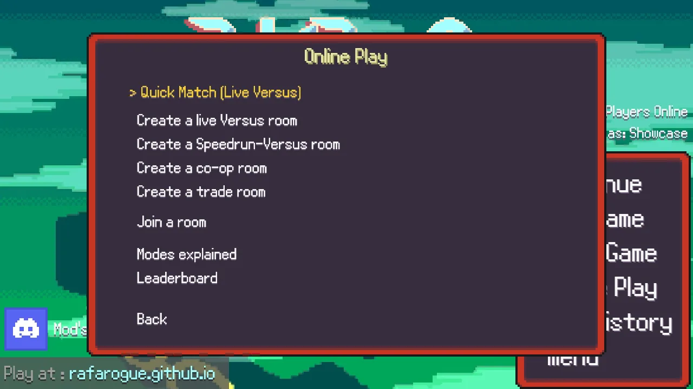
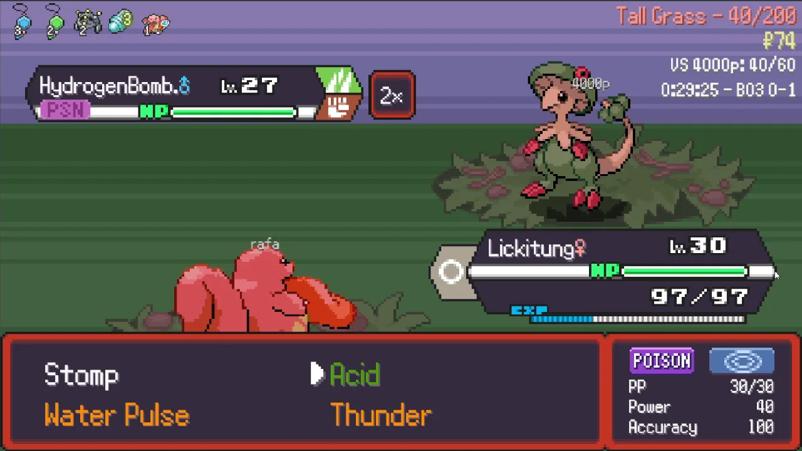
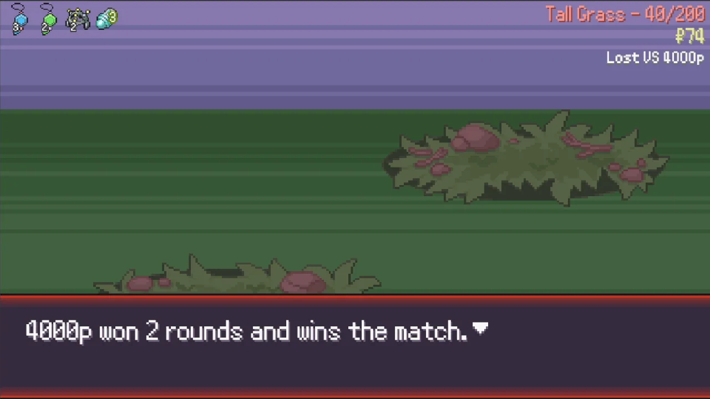
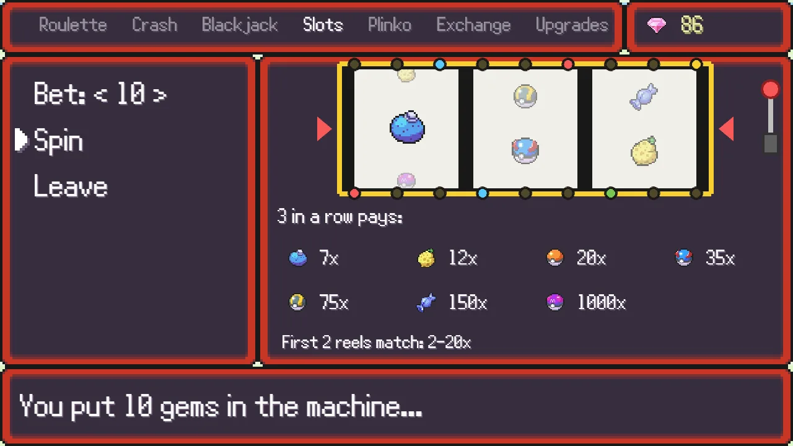
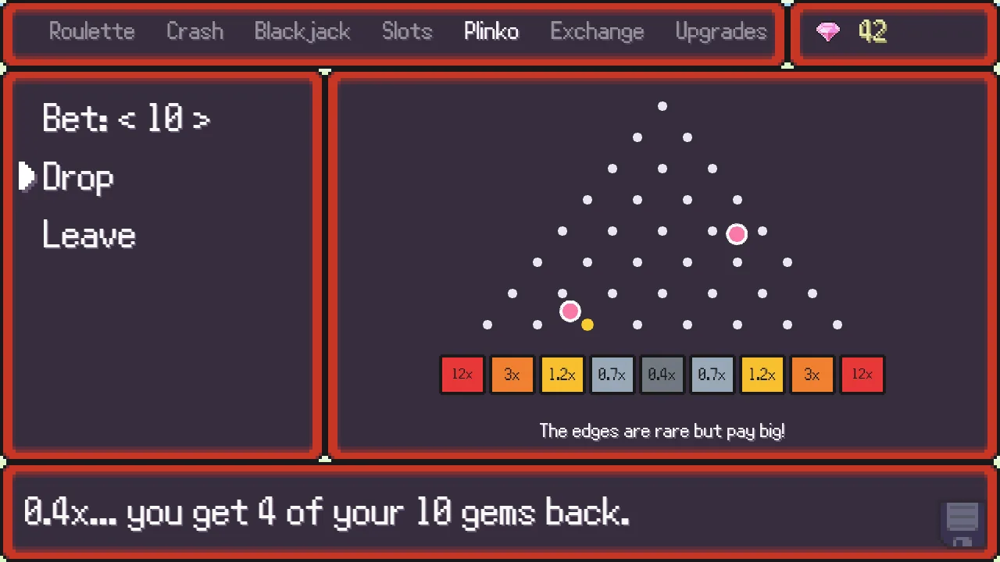
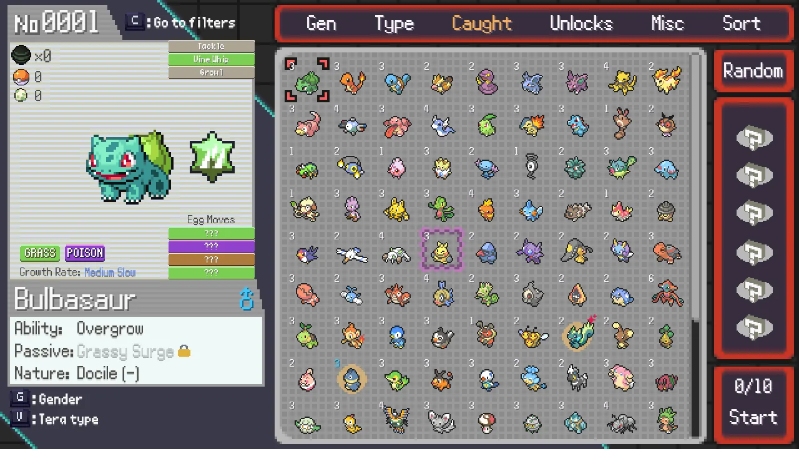
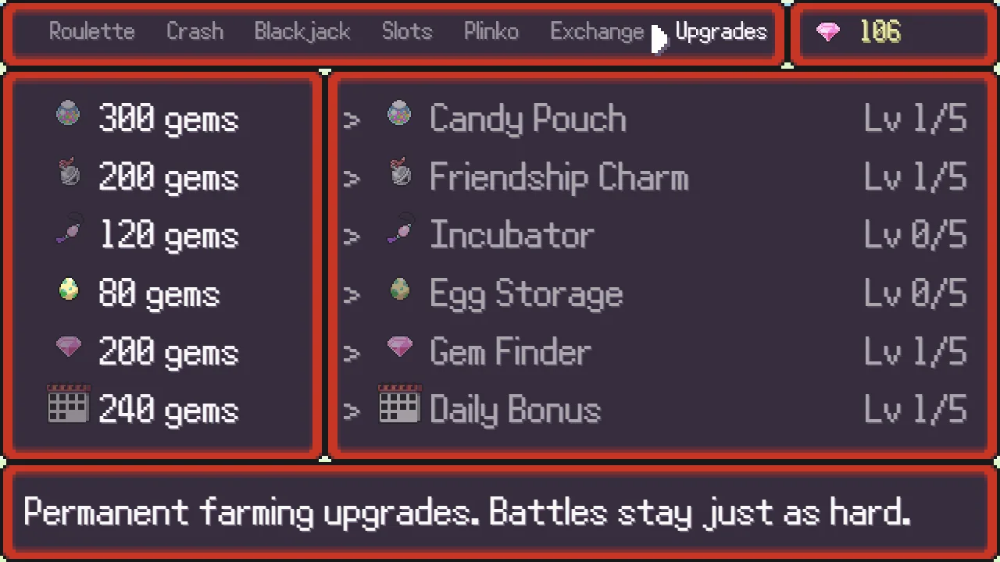

🤝 Co-op runs
Play a whole run with a friend. At the boss and key trainer battles you both meet up and fight a double battle together, each with your own Pokémon.
The Pokémon roguelite you love, now with friends: co-op runs, live PvP battles, Quick Match, trades and a casino. Free, right in your browser.
▶ PLAY NOW Free · PC & phone · Nothing to install · Create an account in 10 seconds
Play a whole run with a friend. At the boss and key trainer battles you both meet up and fight a double battle together, each with your own Pokémon.
Both players race through a run on a clock, then battle each other for real. Best of 3: the first to win 2 battles takes the match.
Find an opponent in one click. Fair rules for everyone, and every win counts on the Quick Match leaderboard.
Open a trade room with a friend and swap Pokémon between your games.
Earn gems by winning battles and matches, then try your luck at roulette, crash, blackjack, slots and plinko, or spend them on egg vouchers and upgrades.
All of the original game is there: Classic runs, starters, eggs, the Pokédex, plus a faster Classic mode and new completion goals.








Yes: Pokerogue Online is a fan-made mod of PokéRogue that adds co-op runs with a friend, live PvP battles, Quick Match with a leaderboard and trades.
It is free and runs in your web browser, on PC and on phone. You only create an account so your progress is saved.
Open Online Play from the title screen, create a co-op room and send the room code to your friend, who joins with Join a room.
No. Pokerogue Online is an unofficial, fan-made mod. It is not affiliated with PokéRogue or Pagefault Games. Pokémon is a trademark of Nintendo, Creatures Inc. and GAME FREAK inc.
Join the Discord to find players, report bugs and suggest ideas.